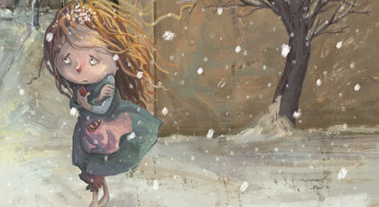

Kibritçi Kız

Bir yılbaşı gecesiydi. Dondurucu, kavurucu bir soğuk vardı. Yoldan geçenler paltolarının yakasını kaldırmışlar, atkılarına bürünmüşler,
hızlı hızlı yürüyorlardı. Kimi evine geç kalmış, acele ediyor, kimi bir eğlence yerine gidiyordu.
Çocuklar koşuyorlar, birbirlerine kartopu atıyorlardı. Gecenin zevkini en çok onlar çıkarıyorlardı. Kahkahalarla gülüyorlar, sevinçle haykırıyorlardı.
Yalnız bir çocuk vardı ki gelip geçenler onun farkında değillerdi. Ufak bir kız çoçuğu. Başı açık, elbisesi yama içinde, yoksul bir kızcağız.
Bir kapının önüne büzülmüş, çıplak ayaklarını altına almıştı. Soğuktan morarmış tir tir titriyordu. Üzerinde oturduğu taş basamakta buz gibiydi.
Yavrucağız da sanki donmuş, bir buz parçası kesilmişti.
Geniş bir mukavva kutunun içine sıralanmış kibrit kutularına bakarken gözleri yaşarıyordu.
Evet, bu bir kibritçi kızdı. O gün bir tek kutu kibrit bile satamamıştı. Satsa, bir kaç kuruş para kazansa, kalkıp evine gider,
annesiyle birlikte hiç olmazsa bir kase sıcak çorba içerdi. Gidemiyordu, çünkü o gün hiç kibrit satamadığını annesine söylemekten çekiniyordu.
Soğuktan, üzüntüsünden titreyen kısık,incecik sesiyle "Kibrit var, kibrit"diye bağırıyordu. Sokaktan geçenlerin hiçbiri başını çevirip bakmıyordu...
Ah hiç olmazsa ayaklarında terlikleri olsaydı! Biraz önce, sokak sokak dolaşırken, hızla geçen bir arabanın önünden kaçmış, kaçarken terlikleri ayağından fırlamıştı.
Karşı kaldırıma geçtikten sonra, dönüp bakmış hınzır bir çocuğun terlikleri kapıp kaçtığını görmüştü. Arkasından seslenmişti ama, çocuk alaylı alaylı
seslenerek koşa koşa uzaklaşmıştı.
Kibritçi kız bunun üzerine bir kapının girintisine sığınmış, oracığa kıvrılıp oturmuştu.
Parmakları donmuş, sızlamaya başlamıştı. Kızcağız bu acıya dayanamadı, kutulardan birini açıp bir kibrit çıkardı. Parmakları uyuşmuştu, kibrit çöpünü
elinde güçlükle tutuyordu. Eli titreye titreye çöpü duvara sürttü. Kibrit birden alev aldı; tatlı, yumuşacık, turuncu bir alev.
Zavallı kız, kibriti bir elinden öbür eline geçirerek, parmaklarını ısıttı. İçi de ısınmıştı. Sanki gürül gürül yanan bir ocağın karşısındaydı. Gözleri
aleve dikilmiş, düşlere dalmıştı: Güzel bir odada, büyük bir ocağın karşısında oturuyordu. Arkasında kalın bir yünlü hırka, ayaklarında kürklü terlikler vardı.
Isınmış, terlemeye bile başlamıştı... Derken kibrit sönüverdi. Kibritin sönmesiyle, o tatlı düşlerde sona ermişti. Kızcağızın parmakları yeniden donmaya,
sızlamaya başlamıştı.
Bir kibrit daha yaktı. Bu sırada soğuk bir rüzgar esti. Kız kibrit sönmesin diye, duvardan yana döndü. Öbür elini aleve siper etti. Aleve bakarken,
karşısındaki duvar sanki eridi, birden açıldı, içerisi göründü. İçeride geniş bir oda vardı. Kar gibi bembeyaz örtü yayılmış bir masanın üzerine tabak tabak
yiyecekler dizilmişti. Sofrada gümüş şamdanlar yanıyor, odayı gündüz gibi aydınlatıyordu. Kızcağız'ın gözleri sofranın ortasında, büyük bir tabağa konulmuş,
nar gibi kıpkırmızı kaz kızartmasına dikilmişti. Ağzı sulandı. Elini oraya doğru uzattı. Kibrit yana yana sonuna gelmişti, parmağını yakıyordu. Kızcağız çöpü yere atıverdi.
Atmasıyla birlikte, yılbaşı sofrası siliniverdi, gözlerinin önüne taş duvar yeniden dikildi.
Üçüncü kibrit daha fazla düşler yarattı: Bir yaz gecesi...Kibritçi Kız kırda bir ağacın altına oturmuş, yıldızlara bakıyor. Gece olduğu halde hava sıcak.
Altındaki toprak, gündüz güneşten ısınmış, fırın gibi yanıyor... Küçük kız gözlerini yıldızlardan ayıramıyordu. Uzaktan uzağa gece kuşları ötüyor, kurbağalar bağrışıyordu.
Derken bir yıldız kaydı, gökyüzüne geniş bir yay çizerek uzaklaştı, söndü. Kızcağız: 'işte, biri daha öldü' diye mırıldandı. Bir gün, ninesi söylemişti:
Her yıldız düştükçe yeryüzünden biri ölürmüş... Ninesini bir daha görebilmek için bir kibrit daha çaktı. Soğuktan kaskatı kesilmiş, beyni durmuştu.
O şimdi sokak ortasında olduğunu unutmuş, düşler dünyasına dalmıştı. Kibritin alevinde yine ninesini görüyor, onun sesini işitir gibi oluyordu. İşte ninesi geliyordu.
Lapa lapa yağan karların arasından bir melek gibi iniyordu... Geldi, geldi...Kollarını açtı, torununu kucakladı, aldı göklere doğru götürdü...
Ertesi sabah, yoldan geçenler, bir evin basamağında donmuş kalmış kızcağızın ölüsünü buldular. Yanı başında bir sürü boş kibrit kutusu vardı.
-Zavallı kız ısınmak için bütün kibritlerini yakmış dediler... Bu kibritlerin alevinde onun ne düşler gördüğünü bilemezlerdi ki.